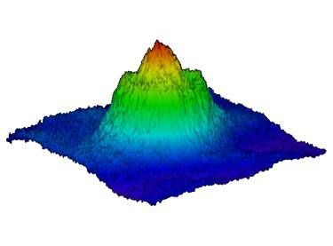

Lattice Models
Lattice Models
- Defined on a discrete lattice
- Apply to deep periodic potentials: few states / site are enough
- Capture physics of strong correlations
Tight Binding Models
- Noninteracting Hamiltonian with periodic potential V(x+a)=V(x)
H = \sum_{j=1}^N \left[-\frac{1}{2m}\partial_i^2 +V(x_i)\right] = \int \left[\frac{1}{2m}\partial_x\psi^\dagger\partial_x\psi^{\vphantom{\dagger}}+ V(x)\psi^\dagger\psi^{\vphantom{\dagger}}\right] dx
Bloch’s theorem: eigenstates labelled by continuous index k (crystal momentum) and discrete index n (band index) \psi_{k,n}(x) = e^{ikx} \varphi_{k,n}(x), \varphi_{k,n} is periodic; k lies in Brillouin zone (-\pi/a,\pi/a]
The eigenvalues E_n(k) give the energy bands.
When lattice potential deep wavefunctions in lowest band(s) highly localized
Introduce a^\dagger_j, a^{\vphantom{\dagger}}_j describing localized state \varphi_j(x) at site j
\varphi_j(x) not eigenstates: coupling between sites described by tight binding Hamiltonian
H_t = -t \sum_{j} \left[a^\dagger_ja^{\vphantom{\dagger}}_{j+1}+a^\dagger_{j+1}a^{\vphantom{\dagger}}_j\right]
- Plays role of kinetic energy in our models (c.f. magnon in spin chain in Lecture 4
Bose Hubbard Model
Simplest interacting lattice model H = H_t + H_U = -t \sum_{\langle j\,k\rangle} \left[a^\dagger_ja^{\vphantom{\dagger}}_{k}+a^\dagger_{k}a^{\vphantom{\dagger}}_j\right] + \frac{U}{2}\sum_j N_j(N_j-1) N_j=a^\dagger_ja^{\vphantom{\dagger}}_j, sum over all nearest neighbours
On-site interaction N_j(N_j-1)=a^\dagger_ja^\dagger_ja^{\vphantom{\dagger}}_ja^{\vphantom{\dagger}}_j
First introduced to describe electrons in solids; boson version widely used in ultracold atomic physics
The Mott State
- U=0 limit easy (no interactions); what about U/t\to\infty?
E(\mathbf{N}) = \frac{U}{2} \sum_j N_j(N_j-1)
Ground state: fill N_\text{sites} sites as uniformly as possible
Easy if filling \nu \equiv N_{\text{particles}}/N_\text{sites} is integer
Notation: ceiling \lceil \nu\rceil is smallest integer bigger than \nu, floor \lfloor \nu\rfloor is largest integer smaller than \mu
Number of sites with occupancy \lceil \nu\rceil is N_\text{sites}\left(\nu - \lfloor \nu\rfloor\right)
Ground state energy is piecewise linear in \nu \frac{E_0}{N_\text{sites}} = \left(\nu - \lfloor \nu\rfloor\right)e(\lceil \nu\rceil) + \left(\lceil \nu\rceil - \nu\right)e(\lfloor \nu\rfloor) e(N) = \frac{U}{2}N(N-1)
Chemical potential \mu = \frac{\partial E_0}{\partial N_\text{particles}} is piecewise constant
\mu = e(\lceil \nu\rceil) -e(\lfloor \nu\rfloor)=U\lfloor \nu\rfloor

Think about varying \mu: values between UN and U(N-1) correspond to integer filling \nu=N
States of integer filling are Mott states, after Nevill Mott
Effect of hopping: Mott states
Do Mott states survive when t\neq 0? Treat t as perturbation
Unperturbed eigenstates of have fixed occupation N_j on site j
\lvert{\mathbf{N}}\rangle = \bigotimes_j \lvert{N_j}\rangle_j
- Applying H_t gives a superposition of states, each with one particle moved to an adjacent site.
Check
How is a Mott state (all sites with the same occupation) affected by H_t in first order perturbation theory?
Effect of hopping: away from Mott state
Mott state of filling \nu=N + 1 extra particle
Place particle on one of N_\text{sites} sites: degenerate ground state when t=0
H_t mixes these states: degenerate perturbation theory (other states separated by energies of order U)
- Ground state multiplet
\lvert{i,+}\rangle\equiv \frac{a^\dagger_i}{\sqrt{N+1}}\bigotimes_{j} \lvert{N}\rangle_j
- Only states \lvert{i\pm 1,+}\rangle are coupled by H_t, with matrix elements
\langle{j|H_t|k}\rvert = \lvert - \rangle t(N+1)
- Within degenerate multiplet, H_t corresponds to tight binding model
H_t\rvert_{+} = -t(N+1) \sum_{\langle j\,k\rangle} \left[\lvert{j,+}\rangle\langle{k,+}\rvert+\text{h.c.}\right]
H_t\rvert_{+} = -t(N+1) \sum_{\langle j\,k\rangle} \left[\lvert{j,+}\rangle\langle{k,+}\rvert+\text{h.c.}\right]
Only many body effect is factor of N due to Bose statistics
Splitting of degenerate states given by dispersion (d dimensions)
\omega_+(\boldsymbol{\eta}) = -2t(N+1)\sum_{n=1}^d\cos\eta_n
- Alternatively remove a particle from Mott state
\lvert{i,-}\rangle\equiv \frac{a^{\vphantom{\dagger}}_i}{\sqrt{N}}\bigotimes_{j} \lvert{N}\rangle_j
- Within these states, H_t takes form
H_t\rvert_{-}=-tN \sum_{\langle j\,k\rangle} \left[\lvert{j,-}\rangle\langle{k,-}\rvert+\text{h.c.}\right]
\omega_-(\boldsymbol{\eta}) = -2tN\sum_{n=1}^d\cos\eta_n
Changes to phase diagram
- Introduce the grand canonical Hamiltonian
\mathcal{H}_\mu = H - \mu N_\text{particles}
- At t=0 the energies of Mott states with filling \nu=N are \frac{\mathcal{E}^{(N)}_\mu}{N_\text{sites}} = \frac{U}{2}N(N-1)-\mu N \mathcal{E}^{(N)}_\mu and \mathcal{E}^{(N+1)}_\mu degenerate when \mu=UN for t=0
Compare with ground state with one extra particle on top of N Mott state
Particle at bottom of tight binding band has energy -2td(N+1)
Together with extra energy of interaction we have overall
\mathcal{E}^{(N)}_\mu + UN - \mu -2dt(N+1)
- For t>\frac{UN-\mu}{2d(N+1)} state with an extra particle actually has a lower energy: Mott state not the ground state
- Energy of ground state with one ‘hole’ in N+1 Mott state is
\mathcal{E}^{(N+1)}_\mu - UN + \mu -2dt(N+1)
- Introducing a hole is thus favoured for t>\frac{\mu-UN}{2d(N+1)}

Our analysis applies only at small t/U
If t/U\to\infty we have a Bose condensate: all the particles can sit in the \eta=0 Bloch state
When interactions are finite but small, we will see in the next lecture that the result is a superfluid.
The boundaries that we have have found can be connected (Problem Set 2 for a variational approach)

- Note diminishing size of Mott lobes: consequence of enhanced hopping in the effective tight binding models

- Mott wedding cake (Source: Cheng Chin, University of Chicago)
Fermi Hubbard Model
- Have to introduce spin to get something interesting (why?)
H=-t \sum_{\substack{\langle j\,k\rangle\\ s=\uparrow,\downarrow}} \left[a^\dagger_{j,s}a^{\vphantom{\dagger}}_{k,s}+a^\dagger_{k,s}a^{\vphantom{\dagger}}_{j,s}\right] + U\sum_j N_\uparrow N_\downarrow,
Application cuprates: high temperature superconductors
2D model describes strong correlations in the CuO_2 layers
Much harder to understand than Bose case…
U/t\to \infty
Three Mott states to 0, 1, or 2 particles per site
2 particles on site make a spin singlet \frac{1}{\sqrt{2}}(\lvert{\uparrow}\rangle\lvert{\downarrow}\rangle-\lvert{\downarrow}\rangle\lvert{\uparrow}\rangle)
At half filling (1 particle / site) can have \lvert{\uparrow/\downarrow}\rangle.
\nu=1 Mott state is massively degenerate, with a ground state multiplet consisting of 2^{N_\text{sites}} possible spin configurations
What happens when U/t large but finite?
Two Sites, Two Fermions
- 6 states altogether in the Hilbert space
\begin{align*} a^\dagger_{1,\uparrow}a^\dagger_{1,\downarrow} \lvert{\text{VAC}}\rangle,\quad a^\dagger_{2,\uparrow}a^\dagger_{2,\downarrow} \lvert{\text{VAC}}\rangle\\ a^\dagger_{1,s}a^\dagger_{2,s'} \lvert{\text{VAC}}\rangle,\quad s,s'=\uparrow,\downarrow. \end{align*}
- Top two states have energy U when t=0; rest have energy 0.
Check
[Try this before continuing!] How does the degeneracy of these states get lifted at finite t? Try writing down the Hamiltonian restricted to these states.
Effective Hamiltonian
Find effective Hamiltonian H_\text{eff} that acts only on the half filled Mott states to describe splitting when t/U\neq 0 is finite
Solving the H_\text{eff} comes later!
Need second order degenerate perturbation theory because H_t has zero matrix elements in degenerate subspace
- Hamiltonian has block structure, with off-diagonal block V\propto t
H = \begin{pmatrix} H_{\text{Mott}} & V^{} \\ V^\dagger & H_\text{Not} \\ \end{pmatrix}
- Notation: P_\text{Mott} is projection operator on to the 2^{N_\text{sites}} Mott states \begin{align*} H_\text{Mott}= P_\text{Mott} H P_\text{Mott},\quad H_\text{Not}= P_\text{Not}H P_\text{Not}\\ V^{} = P_\text{Mott} H P_\text{Not},\qquad V^\dagger = P_\text{Not} H P_\text{Mott}. \end{align*} P_\text{Not}\equiv 1-P_\text{Mott}
For Hubbard model \begin{align*} H_\text{Mott}= P_\text{Mott} H_U P_\text{Mott},\quad H_\text{Not}= P_\text{Not}H P_\text{Not}\\ V^{} = P_\text{Mott} H_t P_\text{Not},\qquad V^\dagger = P_\text{Not} H_t P_\text{Mott}. \end{align*} H_{\text{Mott}}=0 (\nu=1 states have no interaction energy)
Write eigenvalue equation in block form
\begin{pmatrix} 0 & V^{} \\ V^\dagger & H_\text{Not} \\ \end{pmatrix} \begin{pmatrix} \lvert{\Psi}\rangle\\ \lvert{\Phi}\rangle \end{pmatrix} = E \begin{pmatrix} \lvert{\Psi}\rangle\\ \lvert{\Phi}\rangle \end{pmatrix}.
- Eliminate \lvert{\Phi}\rangle
-V^{}\left(H_\text{Not}-E\right)^{-1}V^\dagger\lvert{\Psi}\rangle = E\lvert{\Psi}\rangle.
-V^{}\left(H_\text{Not}-E\right)^{-1}V^\dagger\lvert{\Psi}\rangle = E\lvert{\Psi}\rangle.
Not an eigenvalue equation because of E on LHS
But if E\ll eigenvalues of H_\text{Not}=O(U)
H_\text{eff} =-V^{} H^{-1}_\text{Not}V^\dagger.
Form of H_\text{eff}
H_\text{eff} =-V^{} H^{-1}_\text{Not}V^\dagger.
V^\dagger creates states with adjacent hole and doublon (doubly occupied site)
H_\text{Not} acting on these states is just U
V has to remove the hole and doublon
H_\text{eff} = -\frac{V^{}V^\dagger}{U} = -\frac{t^2}{U} \sum_{\langle j\,k\rangle s,s'} \left[a^\dagger_{j,s}a^{\vphantom{\dagger}}_{k,s} a^\dagger_{k,s'}a^{\vphantom{\dagger}}_{j,s'}+j\leftrightarrow k\right]
H_\text{eff} = -\frac{V^{}V^\dagger}{U} = -\frac{t^2}{U} \sum_{\langle j\,k\rangle s,s'} \left[a^\dagger_{j,s}a^{\vphantom{\dagger}}_{k,s} a^\dagger_{k,s'}a^{\vphantom{\dagger}}_{j,s'}+j\leftrightarrow k\right]
- Re-write by first reordering the operators (anticommutation!)
a^\dagger_{j,s}a^{\vphantom{\dagger}}_{k,s} a^\dagger_{k,s'}a^{\vphantom{\dagger}}_{j,s'} = -a^\dagger_{j,s}a^{\vphantom{\dagger}}_{j,s'}a^\dagger_{k,s'}a^{\vphantom{\dagger}}_{k,s} + \delta_{s^{}s'}a^\dagger_{j,s}a^{\vphantom{\dagger}}_{j,s'}\qquad j\neq k
- Then use identity
\delta_{ab}\delta_{cd} = \frac{1}{2}\left[\boldsymbol{\sigma}_{a d}\cdot \boldsymbol{\sigma}_{c b} + \delta_{ad}\delta_{cb}\right]
- In d dimensions (d=1, chain; d=2 square lattice; d=3 cubic lattice) H_\text{eff} = -\frac{dN_\text{sites}t^2}{2U}+J\sum_{\langle j\,k\rangle} \mathbf{s}_j\cdot \mathbf{s}_k with J=\frac{2t^2}{U} and
\mathbf{s}_j=\frac{1}{2}\sum_{s,s'}a^\dagger_{j,s}\boldsymbol{\sigma}_{s^{}s'}a^{\vphantom{\dagger}}_{j,s'}.
- H_\text{eff} is spin-1/2 antiferromagnetic Heisenberg model!
Doping

At half filling, cuprates are antiferromangetic Mott insulators
Superconductivity emerges when materials doped, introducing electrons or holes into CuO_2 planes
Superconductivity appears where antiferromagnetism dies. Why?
t-J model
- Effective Hamiltonian that describes doped Mott insulator
H_\text{eff} = -t \sum_{\substack{\langle j\,k\rangle\\ s=\uparrow,\downarrow}} \left[a^\dagger_{j,s}a^{\vphantom{\dagger}}_{k,s}+a^\dagger_{k,s}a^{\vphantom{\dagger}}_{j,s}\right] + J\sum_{<j\,k>}\left[\mathbf{s}_j\cdot \mathbf{s}_k - \frac{N_j N_k}{4}\right]
Together with constraint that there are no doubly occupied sites. Could be achieved by applying projector \prod_{j} (1-N_{j,\uparrow}N_{j,\downarrow})
Hopping term allows holes or doubly occupied sites to move
Heisenberg exchange term only acts between sites with one particle. \mathbf{s}_j vanish on empty or doubly occupied sites